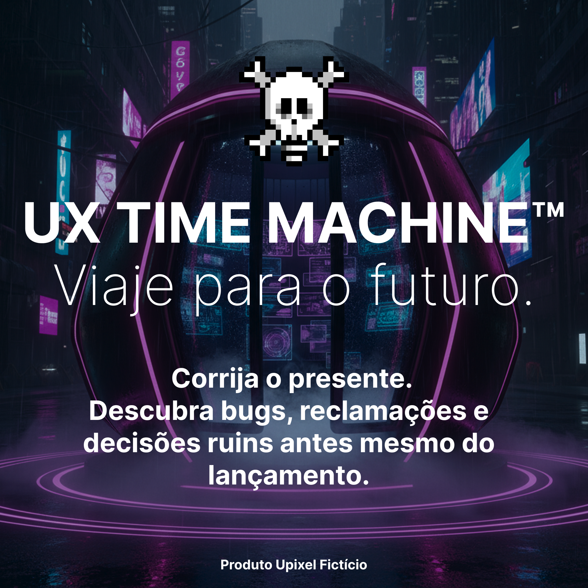

UX Time Machine™
Viaje para o futuro e descubra seus bugs antes dos usuários.
Pare de fazer apostas.
⏳ Descubra qual botão ninguém encontrou.
💥 Veja qual atualização derrubou a produção.
😡 Leia as reclamações antes mesmo do lançamento.
📉 Volte ao presente fingindo que sempre soube da resposta.
*Entrega via meio de transporte ainda não inventado. Garantia válida em qualquer universo onde este produto exista — ou seja, em nenhum.

Benefícios
Conserte hoje os problemas que só apareceriam daqui seis meses.
Correção antecipada™
Corrija bugs antes mesmo de escrevê-los.
Usuários do Futuro™
Converse com pessoas que já reclamaram da sua interface.
Dashboard Pós-Fracasso™
Veja métricas completas do desastre antes dele acontecer.
Detector de Reuniões
Saiba quais reuniões poderiam ter sido um e-mail.
IA Arrependida™
Descubra qual prompt gerou aquele layout horrível.
Economia de Retrabalho
Apague meses de decisões ruins em apenas uma viagem.
Modo "Eu Avisei"
Volte apenas para dizer que já sabia.
Sprint Infinita™
Descubra que sempre haverá uma alteração de última hora.
*Resultados não avaliados por nenhum órgão real de usabilidade, design ou bom senso. UX em Spray™ é um produto fictício e não remove, aprova, reduz ou simula absolutamente nada.
Como funciona
Quatro passos entre você e uma interface impecável. Nenhum deles funciona, mas todos são fáceis.
Escolha uma data
Quanto mais distante, maior o arrependimento.
Viaje no tempo
Evite encontrar sua versão defendendo a mesma ideia ruim.
Fotografe os bugs
Leve prints das reclamações e avaliações de uma estrela.
Ignore tudo
Porque o stakeholder prefere daquele outro jeito.
O que vem na embalagem
Tudo isso dentro de uma caixa que também promete mais do que entrega — combinando perfeitamente com o produto.
- 1 UX Time Machine™.
- 1 Capacete anti-paradoxo.
- 1 Manual escrito pela sua versão de 2037.
- 1 Extintor para apagar incêndios do futuro.
- 1 Botão "Voltar Antes da Daily".
- 1 Certificado de viagem temporal sem validade legal.
- 1 Roadmap já desatualizado quando você voltar.
Avaliações
Depoimentos de pessoas que voltaram no tempo para evitar bugs... ou pelo menos tentar.
"Viajei seis meses no futuro e descobri que o botão 'Salvar' nunca salvou nada. Economizei umas 300 reclamações."
"Descobri que meu deploy de sexta realmente derrubaria tudo. Fiz exatamente igual mesmo assim."
"Encontrei meu eu de 2031. Ele só repetia: 'faz pesquisa com usuário'. Achei exagero e ignorei."
"A máquina mostrou exatamente qual funcionalidade receberia nota 1 na loja. O CEO aprovou do mesmo jeito."
"Voltei do futuro com um relatório completo dos bugs. Quando cheguei, mudaram o escopo inteiro."
"Voltei para impedir um bug crítico. Descobri que o verdadeiro problema era a reunião que decidiu implementá-lo."
Antes de alterar a linha do tempo, tire essas dúvidas
A UX Time Machine™ realmente mostra o futuro?
Sim. Ela mostra exatamente o futuro que você vai ignorar depois da reunião de alinhamento.
Posso impedir um bug antes dele existir?
Pode. Mas alguém vai pedir uma "pequena alteração" um dia antes da entrega e criar um bug completamente novo.
Posso encontrar meu eu do futuro?
Pode. Ele provavelmente estará cansado, tomando café e repetindo: "era melhor ter feito pesquisa com usuários".
Ela funciona com IA?
Funciona perfeitamente. Inclusive prevê o momento exato em que a IA responderá com absoluta confiança... e completamente errada.
Posso alterar o passado?
Pode tentar. Mas existe uma regra imutável do universo: sempre haverá um stakeholder pedindo mais uma alteração.
Isso é um produto de verdade?
Não. A UX Time Machine™ é um produto 100% fictício da coleção satírica Upubli™ da Upixel. Ela existe apenas para lembrar que prever o futuro continua sendo mais difícil do que conversar com usuários reais.
Este é um produto fictício, criado apenas para entretenimento pela Upixel. UX em Spray™, a Upubli™ e todos os depoimentos desta página não existem, não são vendidos e não substituem pesquisa, workshop ou entrevista nenhuma — essas, sim, continuam bem reais e recomendadas.